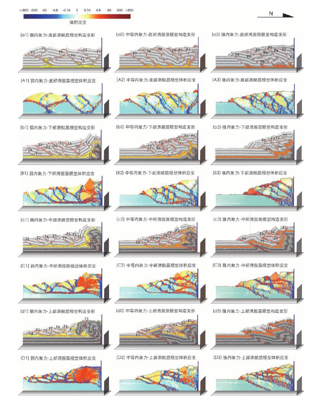

论文下载：
辛文 (2021). 西南天山山前冲断带构造变形控制因素研究——基于离散元数值模拟. 硕士论文. 浙江大学.
题目：西南天山山前冲断带构造变形控制因素研究——基于离散元数值模拟
作者：辛文
摘要
西南天山山前褶皱冲断带东段和西段变形具有显著差异，西段喀什北缘冲断带以发育“堆垛”构造和基底卷入逆冲构造为特征，与其相邻的东段柯坪冲断带却发育大规模叠瓦状薄皮滑脱构造，是什么因素控制了冲断带的变形差异。论文基于地震解释剖面，采用离散元数值模拟研究手段，分析单变量控制因素对冲断带变形的影响。论文共设计二十八组实验，探讨滑脱层强度、滑脱层位置、盖层厚度、先存断裂、单双向挤压及双向挤压距离等因素对西南天山山前褶皱冲断带构造变形的影响。 根据实验结果得出以下结论：
- 滑脱层内聚力的大小对变形具有重要的控制作用。滑脱层内聚力大小控制其下断裂向上突破的难易程度，滑脱层内聚力较强时，沿先存薄弱带易突破滑脱层形成逆冲推覆构造；滑脱层内聚力较弱时，滑脱层将发育成逆冲体系的顶板断裂，阻碍滑脱层之下单元中先存断裂活化后向上传播。弱内聚力滑脱层可以促进变形前锋向前传播得更快、更远；限定变形主要发生在滑脱层之上单元，滑脱层之上单元易形成三角带和冲起构造，滑脱层之下单元构造变形相对较弱。滑脱层内聚力越小，越容易形成叠瓦状薄皮滑脱构造；上覆地层越厚形成的逆冲片规模越大、数量越少，逆冲片间距越大。
- 在单、双向挤压时，应力、应变主要集中在滑脱层和断裂等薄弱带位置，靠近挤压端应力和应变较强；滑脱层内聚力越小，应力越容易向远处传播。近距离双向挤压时，应力可以通过弱内聚力滑脱层传播至远端，从而对远端的变形产生影响；远距离双向挤压时，不会对另一侧的变形产生影响。
- 上白垩统—古近系膏盐滑脱层和新生代之前的先存断层，是喀什北缘冲断带发育的堆垛式变形主要控制因素；同时，帕米尔弧形构造带由南向北的挤压作用也影响了喀什北缘冲断带变形样式。古近系的膏盐层可以作为区域内有效滑脱层，在挤压过程中，前新生代先存断裂依次活化并相互叠覆形成系列逆冲片，上白垩统—古近系膏盐滑脱层作为顶板断裂阻碍其下深部断裂继续向上和向南传播，靠近挤压端形成“堆垛”构造。喀什北缘冲断带位于帕米尔和南天山对接带，其南侧前锋断裂受到帕米尔弧形构造带由南向北逆冲作用影响，阻碍喀什北缘冲断带前缘隐伏逆冲断裂向南和向上突破，导致喀什北缘冲断带没有形成类似柯坪冲断带叠瓦状薄皮滑脱构造。
- 柯坪冲断带发育大规模的叠瓦状薄皮滑脱构造变形与中寒武统膏盐滑脱层和古生代厚沉积盖层有着密切关系。柯坪地区发育较厚的古生代和新生代地层导致作为有效弱内聚力滑脱层的中寒武统膏盐滑脱层的有效性增强，在挤压过程中形成一系列向下归一到中寒武统滑脱层内的逆冲片，发育大规模的叠瓦状薄皮滑脱构造。此外，柯坪地区距离西昆仑—帕米尔冲断带较远，其变形不受西昆仑—帕米尔冲断带由南向北挤压作用的影响。在柯坪冲断带内部，柯坪冲断带以皮羌断裂为界进一步划分为东西两段，西段的寒武系膏泥盐滑脱层埋藏较深，上覆沉积地层较厚；而东段的寒武系膏泥盐滑脱层埋藏较浅，上覆沉积地层相对较薄，导致柯坪冲断带西侧逆冲片比东侧逆冲片规模更大、间隔更大和数量更少。
关键词：西南天山，褶皱冲断带，构造变形，控制因素，数值模拟
目录：
- 第一章 绪论
- 第二章 冲断带数值模拟研究
- 第三章 区域地质概况
- 第四章 喀什北缘冲断带变形控制因素的数值模拟分析
- 第五章 滑脱层及其上覆地层厚度对柯坪冲断带变形的影响
- 第六章 喀什北缘冲断带和柯坪冲断带变形差异控制因素分析
- 第七章 认识与结论
- 参考文献
